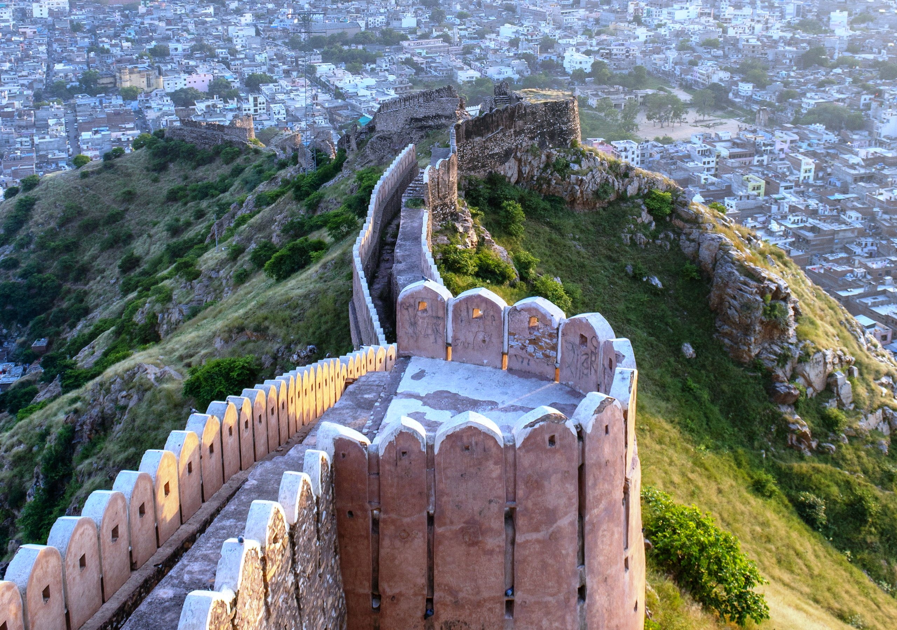
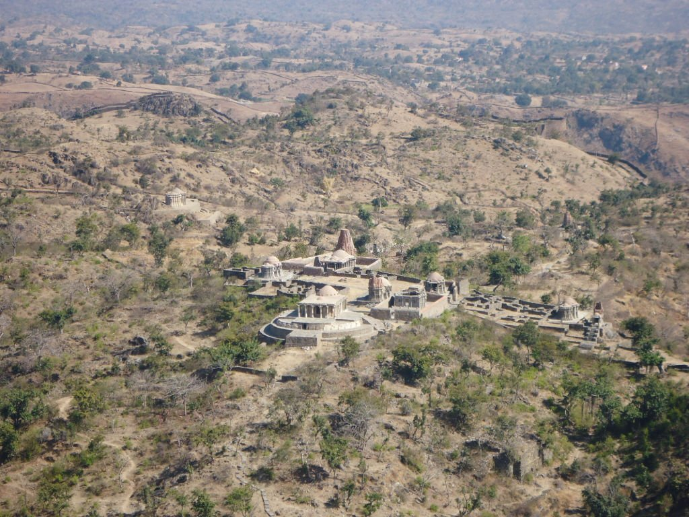
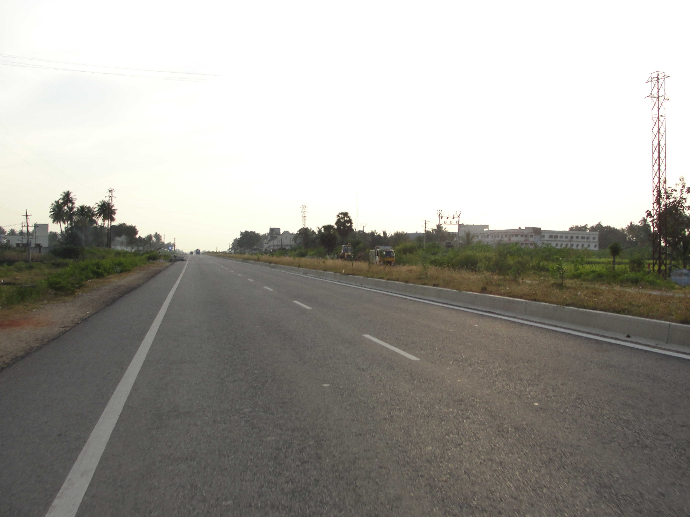
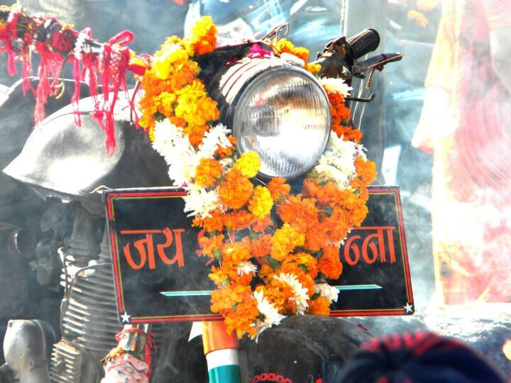

कुलधरा गांव
राजस्थान (Rajasthan) के जैसलमेर जिले का कुलधरा गांव (Kuldhara village). ये गांव पिछले 300 सालों से श्रापित है भारत ही नहीं, अगर हम बात करें 1800 के दशक में, गांव मंत्री सलीम सिंह के अधीन एक जागीर या राज्य हुआ करता था, जो कर इख्ठा करके लोगों के साथ विश्वासघात किया करता था। ग्रामीणों पर लगाया जाने वाले कर की वजह से यहां के लोग बेहद परेशान रहते थे। ऐसा कहा जाता है कि सलीम सिंह को ग्राम प्रधान की बेटी पसंद आ गई और गांव वालों को इसपर धमकी दे डाली कि अगर उन्होंने इस बात की विरोध करने की कोशिश की या रस्ते में आए, तो वह और कर वसूल करने लगेगा। अपने गांव वालों की जान बचाने के साथ-साथ अपनी बेटी की इज्जत बचाने के लिए मुखिया समेत पूरा गांव रातों-रात फरार हो गया। गांव वाले गांव को वीरान छोड़कर किसी दूसरी जगह पर चले गए। ऐसा कहा जाता है कि गांव वालों ने जाते समय गांव को ये श्राप दिया था कि यहां आने वाले दिनों में कोई नहीं रह पाएगा।
Bhangarh Fort ये किला पहली नजर में ही देखने में अजीब और डरावना एहसास पैदा करता है.भानगढ़ किला सत्रहवीं शताब्दी में बनवाया गया था। इस किले का निर्माण मान सिंह के छोटे भाई राजा माधो सिंह ने करवाया था। राजा माधो सिंह उस समय अकबर के सेना में जनरल के पद पर तैनात थे। उस समय भानगढ़ की जनसंख्या तकरीबन 10,000 थी। भानगढ़ अल्वार जिले में स्थित एक शानदार किला है जो कि बहुत ही विशाल आकार में तैयार किया गया है।
चारों तरफ से पहाड़ों से घिरे इस किले में बेहतरीन शिल्पकलाओ का प्रयोग किया गया है। इसके अलावा इस किले में भगवान शिव, हनुमान, गोपीनाथ, मंगला देवी और केशव राय आदि के बेहतरीन और अति प्राचीन मंदिर विद्यमान है। इस किले में कुल पांच द्वार हैं और साथ एक मुख्य दीवार है। इस किले में दृण और मजबूत पत्थरों का प्रयोग किया गया है जो अति प्राचीन काल से अपने यथा स्थिति में पड़े हुये हैं।
फिलहाल इस किले की देख रेख भारत सरकार द्वारा की जाती है। किले के चारों तरफ भारतीय पुरातत्व सर्वेक्षण (एएसआई) की टीम मौजूद रहती हैं। पुरातत्व विभाग द्वारा सूर्यास्त के बाद इस क्षेत्र में किसी भी व्यक्ति के रूकने की मनाही है।.

नाहरगढ़ किला राजस्थान के नाहरगढ़ के किले में होने वाली अजीब घटनाओं के बारे में शोधकर्ताओं ने माना हैनाहरगढ़ का किला जयपुर को घेरे हुए अरावली पर्वतमाला के ऊपर बना हुआ है। आरावली की पर्वत श्रृंखला के छोर पर आमेर की सुरक्षा को ध्यान में रखते हुए इस किले को सवाई राजा जयसिंह द्वितीय ने सन १७३४ में बनवाया था। यहाँ एक किंवदंती है कि कोई एक नाहर सिंह नामके राजपूत की प्रेतात्मा वहां भटका करती थी। किले के निर्माण में व्यावधान भी उपस्थित किया करती थी। अतः तांत्रिकों से सलाह ली गयी और उस किले को उस प्रेतात्मा के नाम पर नाहरगढ़ रखने से प्रेतबाधा दूर हो गयी थी।[1]
१९ वीं शताब्दी में सवाई राम सिंह और सवाई माधो सिंह के द्वारा भी किले के अन्दर भवनों का निर्माण कराया गया था जिनकी हालत ठीक ठाक है जब कि पुराने निर्माण जीर्ण शीर्ण हो चले हैं। यहाँ के राजा सवाई राम सिंह के नौ रानियों के लिए अलग अलग आवास खंड बनवाए गए हैं जो सबसे सुन्दर भी हैं। इनमे शौच आदि के लिए आधुनिक सुविधाओं की व्यवस्था की गयी थी। किले के पश्चिम भाग में “पड़ाव” नामका एक रेस्तरां भी है जहाँ खान पान की पूरी व्यवस्र्था है। यहाँ से सूर्यास्त बहुत ही सुन्दर दिखता है

राणा कुंभा पैलेस राजस्थान के चतौड़गढ़ में स्थित राणा कुंभा पैलेस राज्य की सबसे डरावनी जगहों में से एक माना जाता हैं। भारत में ऐसे कई वीर और महान शासक पैदा हुए हैं, जिनकी शौर्यगाथाएं जितनी बताई जाएं, कम ही पड़ती हैं। एक ऐसे महान शासक और योद्धा थे राणा कुंभा, जिन्हें महाराणा कुंभकर्ण या कुंभकर्ण सिंह के नाम से भी जाना जाता है। वर्ष 1433 से 1468 तक वह मेवाड़ के राजा थे। युद्ध के अलावा राणा कुंभा को अनेक दुर्ग और मंदिरों के निर्माण के लिए भी इतिहास में याद किया जाता है। उनका स्थापत्य युग स्वर्णकाल के नाम से जाना जाता है। चित्तौड़ में स्थित विश्वविख्यात 'कीर्ति स्तंभ' की स्थापना राणा कुंभा ने करवाई थी। आपको जानकर हैरानी होगी कि मेवाड़ में निर्मित 84 किलों में से 32 किले तो राणा कुंभा ने ही बनवाए थे। महज 35 वर्ष की अल्पायु में उनके द्वारा बनवाए गए 32 दुर्गों में चित्तौड़गढ़, कुंभलगढ़, अचलगढ़, मचान दुर्ग, भौसठ दुर्ग और बसंतगढ़ महत्वपूर्ण और भव्य हैं। चित्तौड़ दुर्ग का आधुनिक निर्माता भी उन्हें ही कहा जाता है, क्योंकि दुर्ग के अधिकांश वर्तमान भाग का निर्माण उन्होंने ही करवाया था।

NH 79 हाईवे राजस्थान में अजमेर उदयपुर को जोड़ने वाले NH79 हाईवे को खून का रास्ता भ कहते हैं. इस रास्ते से गुजरने वाले लोगो ने यहां कई भूतिया गतिविधियों का अनुभव किया है।अजमेर उदयपुर हाइवे को खून का रास्ता भी कहते हैं। इस रास्ते से गुजरने वाले लोगो ने यहां कई भूतिया गतिविधियों का अनुभव किया है। कई लोगों का कहना है कि इस रास्ते एक औरत दिखाई देती है, जो दुल्हन का लाल जोड़ा पहने होती है। जब बाल विवाह प्रचलित था तब एक 5 साल की एक लड़की की शादी 3 साल के लड़के से होनी था, लेकिन मां इस रिश्ते से खुश नहीं थी और वो मदद मांगने के लिए हाइवे की और चली लेकिन गई, लेकिन तेज रफ़्तार गाड़ी ने मां और बेटी दोनों को टक्कर मार दी और उन दोनों की वही मौत हो गई।

कोई पत्थर में भगवान ढूंढ लेता है तो कोई पोधे या जानवर के आगे सिर झुकाता है. लेकिन, राजस्थान में एक ऐसी जगह है, जहां लोग किसी मूर्ति की नहीं, बल्कि मोटरसाइकिल की पूजा करते हैं न 1988 में ओम बन्ना अपनी बुलेट पर अपने ससुराल बगड़ी,साण्डेराव से अपने गाँव चोटिला आ रहे थे तभी उनका एक्सीडेंट एक पेड़ से टकराने से हो गया ओम सिंह राठौड़ की उसी वक़्त मृत्यु हो गयी एक्सीडेंट के बाद उनकी बुलेट को रोहिट थाने ले जाया गया पर अगले दिन पुलिस कर्मियों को वो बुलेट थाने में नहीं मिली वो बुलेट बिना सवारी चल कर उसी स्थान पर चली गयी अगले दिन फिर उनकी बुलेट को रोहिट थाने ले जाया गया पर फिर वही बात हुयी ऐसा तीन बार हुआ चौथी बार पुलिस ने बुलेट को थाने में चैन से बाँध कर रखा पर बुलेट सबके सामने चालू होकर पुनः अपने मालिक सवार के दुर्घटना स्थल पर पहुंच गयी अतः ग्रामीणो और पुलिस वालो ने चमत्कार मान कर उस बुलेट को वही पर रख दिया[5] उस दिन से आज तक वहाँ दूसरी कोई बड़ी दुर्घटना वह नहीं हुयी जबकि पहले ये एरिया राजस्थान के बड़े दुर्घटना क्षेत्रों में से एक था [6] ओम बन्ना की पवित्र आत्मा आज भी वह लोगो को अपनी मौजूदगी का एहसास कराती है आज भी रोहट थाने के नए ठाणेदार जोइनिंग से पहले वह धोक देते हैं[7][8]